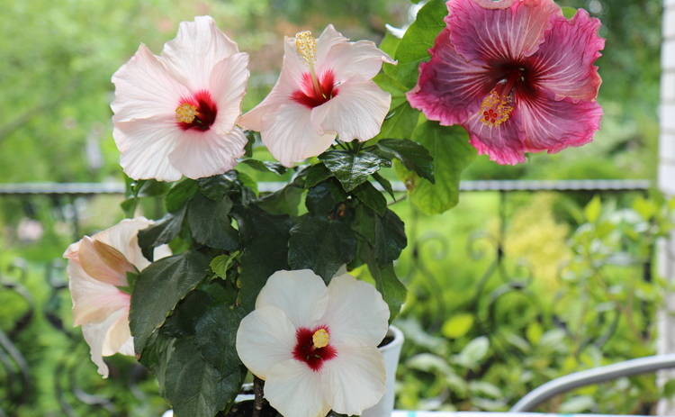

Гібіскус
Гібі́ск (також Гібіскус)— рід рослин родини мальвових. Дикі й окультурені рослини. Переважно чагарники та дерева. Трапляються також багаторічні та однорічні трави.

Гібіски можуть бути кущами, напівкущами, деревами або травами. Листки більш-менш надрізні або цілі, черешчаті. Квітки пазушні, зазвичай поодинокі та іноді скупчені в кінцеву китицю, 5-мірні, двостатеві; у більшості видів великі, витончені, з яскраво забарвленими віночками, які різного кольору, часто з темним центром; чашечка дзвоноподібна, рідше неглибоко чашоподібна або трубчаста, 5-лопатева або 5-зубчаста, стійка. Плід у вигляді коробочки від циліндричної до кулястої форми, що розпадається на 5 стулок із ниркоподібними насінинами, покритими пушком або залозистими волокнами.
З квіток Hibiscus sabdariffa виготовляють напій каркаде. Більшість гібісків давно культивують у садах та оранжереях як декоративні
рослини для живих огорож та заради витонченості їх квітів. Є привабливою кімнатною рослиною. Потребує тепло, багато світла та простору.
При правильному обрізанні та поливанні може квітнути цілий рік. Найпоширеніша в кімнатній та оранжерейній культурі вид — так звана китайська рожа
(Hibiscus rosa-sinensis). Це чагарник з квітами різних кольорів (часто — червоні), як прості, так і махрові. Батьківщиною його вважають Малайський архіпелаг.
У тропіках культивують усюди у садах.
В останні 15 — 20 років виведена величезна кількість сортів гібіску китайської рожі (Hibiscus rosa-sinensis) різноманітної форми та поєднання кольорів.
При запиленні використовували гібіски кількох інших видів. Hibiscus moscheutos — трав'янистий багаторічний вид, дуже поширений у субтропічному (і більше південному) кліматі.
В останні роки все ширше використовують у садах більш північних районів. Крім перерахованих вище, відомо ще кілька десятків видів та сортів, які використовують не
лише як декоративні рослини. Наприклад, гібіск конопляний, або кенаф (Hibiscus cannabinus), дає добрий прядильний матеріал, для чого його й розводить
у багатьох тропічних країнах.